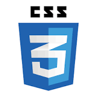
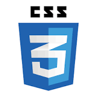
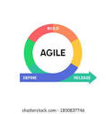
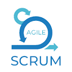

Skills
Programming languages:


Operating systems:


Database management:

Web development:
 

Version control:
Software development methodologies:
 Certifications
Certified in python , integrated institute of advanced studies , Aug 2022
Certified in java , integrated institute of advanced studies , Nov 2022
Certified Google IT Support, Coursera, 6 May 2020